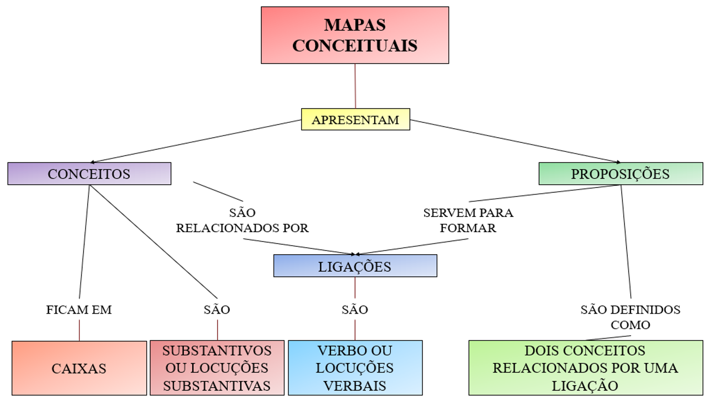
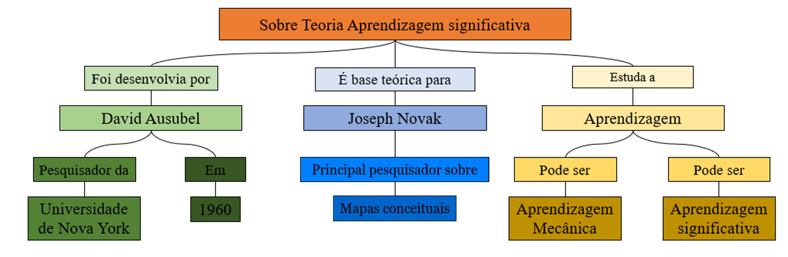

MAPAS CONCEITUAIS E TEORIA DA APRENDIZAGEM SIGNIFICATIVA
Definição:
“Um mapa conceitual é um diagrama ou ferramenta gráfica que representa visualmente
as relações entre conceitos e ideias. A maioria dos mapas conceituais descreve ideias, como caixas
ou círculos (também chamados de nós), que são estruturados hierarquicamente e conectados com linhas
ou setas (também chamados de arcos). Essas linhas são rotuladas com palavras e frases de ligação
que ajudam a explicar as conexões entre os conceitos.”
Conceitos:
“Os conceitos são definidos como "regularidades ou padrões percebidos em eventos
ou objetos, ou registros de eventos ou objetos, designados por um rótulo" e são representados como
formas no diagrama.”
Palavras / frases de ligação:
“Palavras ou frases de ligação estão localizadas nas linhas
que conectam objetos em um mapa conceitual, e essas palavras descrevem a relação entre dois
conceitos. Elas são tão concisas quanto possível e normalmente contêm um verbo. Exemplos
incluem "causas", "inclui" e "requer".”
Estrutura proposicional:
“As proposições são declarações significativas constituídas
por dois ou mais conceitos relacionados com palavras de ligação. Estas declarações também
são conhecidas como unidades semânticas ou unidades de significado. Conceitos e proposições
são a base para a criação de novos conhecimentos em um domínio. Essencialmente, um mapa
conceitual transmite visualmente um conjunto de proposições sobre um determinado tópico.”
IMPLEMENTANDO MAPAS CONCEITUAIS...
APRENDIZAGEM SIGNIFICATIVA
Definição:
“A teoria da aprendizagem significativa foi desenvolvida pelo pesquisador
da Universidade de Nova York, David Ausubel em 1960, ela é base para Joseph Novak, principal desenvolvedor dos
mapas conceituais. Essa teoria estuda que a aprendizagem pode ser mecânica ou significativa.”
